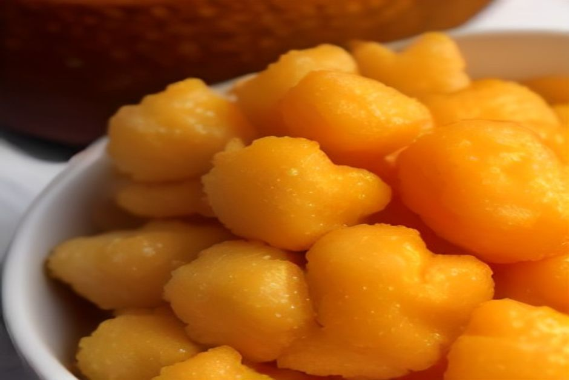

Se a Madeira vi portano un piatto di cubetti dorati che somigliano a una polenta fritta, non è un errore: è il milho frito, letteralmente "mais fritto". Non l'avete ordinato, ma arriva quasi sempre. Ecco cos'è, in cosa è diverso dalla polenta che conoscete e dove assaggiarlo.
Milho frito in breve: cosa vi ritrovate nel piatto
Sono cubetti di farina di mais cotta, raffreddata e poi fritta in olio caldo. Fuori hanno un guscio croccante e dorato, dentro restano morbidi e compatti. Per capirci: una via di mezzo tra la polenta fritta delle nostre parti e una frittella salata.
La cosa da sapere subito è che qui è un contorno. Quasi non compare mai da solo: nasce per accompagnare la carne alla griglia, e a Madeira la carne alla griglia ha un nome preciso, l'espetada.
Mais fritto o polenta fritta? Le differenze che si sentono al primo boccone
Chi mangia polenta da sempre si chiederà se sia la stessa cosa. La risposta onesta è: quasi, ma non del tutto. Il punto di partenza è lo stesso, farina di mais cotta e lasciata rassodare fino a poterla tagliare. Poi le strade si separano.
- Condimento. Il milho frito si mescola con aglio e couve prima di rassodarsi. Il cavolo e l'aglio gli danno una nota saporita, un filo amarognola, che la polenta semplice non ha.
- Consistenza. È più denso e compatto di una polenta comune.
- Forma. Da noi la polenta si frigge o si rosola di solito a fette. Qui si taglia a piccoli cubi, e più piccoli sono, più superficie croccante ci sarà a ogni boccone.
- Cottura. È sempre fritto in olio abbondante, non grigliato.
Com'è fatto: ingredienti e preparazione
La base è farina di mais bianco, cotta lentamente con acqua, strutto o burro, aglio schiacciato e couve sminuzzata. La couve è il cavolo portoghese a foglia larga, che si trova in tutta l'isola.
Si mescola finché il composto si addensa come una polenta molto soda. In questa forma, non ancora fritta, si chiama milho cozido, "mais cotto". Poi si lascia raffreddare e rassodare per un paio d'ore, si taglia a cubetti e si friggono in olio bollente, finché ogni pezzo ha il suo guscio croccante.
Un avviso pratico: tra gli ingredienti ci può essere lo strutto, quindi se evitate la carne di maiale o seguite una dieta particolare chiedete in sala come lo preparano.
Perché arriva sempre insieme all'espetada
L'espetada è il piatto simbolo di Madeira: pezzi di manzo conditi con aglio e alloro, infilzati e grigliati sulla legna, tradizionalmente di alloro. Il milho frito è il suo contorno standard, quasi ovunque sull'isola.
L'abbinamento ha una ragione concreta. I cubetti fritti assorbono a tavola i succhi di aglio e vino della carne. Fanno il lavoro che altrove fanno il pane o le patate, ma con una croccantezza che l'amido semplice non dà.
Per questo non c'è bisogno di ordinarlo a parte. Nella maggior parte dei ristoranti che servono l'espetada il milho frito arriva insieme, perché i due piatti sono trattati come un'unica coppia e non come voci separate del menu.
L'espetada si prende l'attenzione. Il milho frito è il motivo per cui il piatto non sembra mai completo senza.
Da dove viene: un'idea nata dagli avanzi
Il mais arrivò a Madeira con i coloni portoghesi nel XV secolo e si adattò bene ai piccoli appezzamenti ripidi e terrazzati dell'isola. Diventò presto un alimento base, accanto a patate e pane, nelle case di campagna.
Il milho frito nasce più da un'abitudine pratica che da una ricetta scritta. La polenta avanzata, raffreddata e rassodata durante la notte, veniva tagliata e fritta invece di essere riscaldata molle. Il risultato croccante è diventato un piatto a sé. È la stessa logica della nostra polenta del giorno prima, solo con più aglio e un cavolo in mezzo.

Dove mangiare il milho frito a Madeira
La regola è semplice: cercate un ristorante che serva l'espetada. Nella maggior parte dei locali tradizionali dell'isola troverete il milho frito nello stesso piatto.
I due nomi da segnare sono Câmara de Lobos ed Estreito de Câmara de Lobos, villaggi di pescatori e viticoltori a ovest di Funchal. Sono i luoghi più legati a questo piatto, con churrascarias all'aperto dove l'espetada si griglia su spiedi di legno appesi sopra il tavolo.
Un consiglio da chi mangia lì: portate fame e non riempitevi di pane prima. Il milho frito è saziante, e le porzioni di carne non sono timide.
Una mattinata in barca e poi il pranzo in paese
Câmara de Lobos è anche la prima tappa del Day Trip di Chifbay da Funchal. Se volete abbinare le due cose, il programma si scrive da solo: la mattina in barca lungo la costa, poi un pranzo tardivo in paese.
La barca parte dalla Marina do Funchal, pontile C, alle 10:00 o alle 14:00, ed è tutta per il vostro gruppo, fino a 5 persone, con due skipper abilitati di Madeira. Si arriva a Ribeira Brava in 2 h 30 per 500 EUR, oppure a Ponta do Sol in 3 h per 600 EUR. Il prezzo è per l'intera barca, non a persona. Sono previsti Câmara de Lobos, Cabo Girão, un bagno e le tavole da paddle alla Fajã dos Padres. A bordo ci sono cibo e bevande, e il video a 360° e le foto sono inclusi.
Se preferite una serata più tranquilla, c'è anche l'uscita al tramonto: parte 1 h 15 prima del tramonto, tutto l'anno, per 2 h fino a Cabo Girão (400 EUR) o 2 h 30 fino a Ribeira Brava (500 EUR), senza sosta per il bagno. Per confrontare le varie uscite potete guardare le gite in barca a Madeira, e per i dettagli pratici la pagina informazioni. La cancellazione è gratuita fino a 24 ore prima della partenza.
In sintesi
Se l'espetada è quello che tutti ordinano a Madeira, il milho frito è quello a cui nessuno pensa di ordinare a parte. Arriva e basta, croccante ai bordi, e fa in silenzio metà del lavoro del pasto. Per chi ama la polenta è una scoperta facile: stessa anima, più carattere.